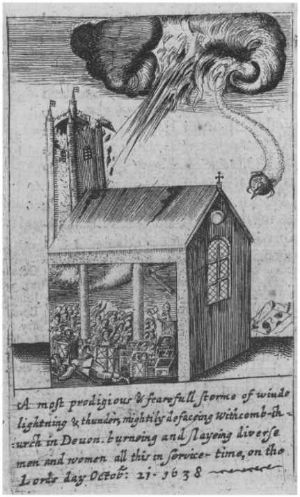

Document d'origine

Une boule de feu balayant l'église de la paroisse de Widecomein-the Moor John
Vicars, Prodigies & apparitions or Englands warning pieces
(Londres, 1642-1643), 30. By permission of the British Library.
Shelfmark: C. 27. a. 15. <
Walsham, Alexandra, "Providence in Early Modern England", Oxford University Press, 1999, p. 191 < Picasso, Fabio: "1638 Devon Church Ball of Fire", Magonia Exchange, 25 mars 2006.
A Tournay, pluie rouge"M. Chladni's New Catalogue of Aerolites", Annals of Philosophy, New Series 12:93, juillet à décembre 1826.